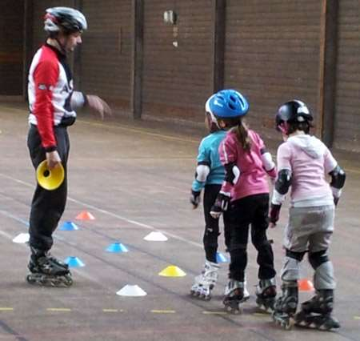

Accueil

Présentation
Ce site a été fait pour un exposé en SNT (sciences numériques et technologique) par Jaffray Daniel et Gaillard Jules. Il a été fait sur le sujet: "Le Roller".
Ce site est donc une présentation sur le roller. Vous pourrez, après votre visite sur le site, choisir le roller le plus adapté pour l'activité que vous voulez exercé.
Plan du site
Pas de roller sans connaître son histoire. Il y a différents types de rollers
L'histoire
Quelques dates
C'est en 1760 que John Joseph Merlin (1735-1803), originaire de Huy, ville de la Belgique actuelle qui était à l'époque en Pays-Bas Autrichiens, fixe deux rouleaux en métal en ligne sous une plaque de bois, pour remplacer le patin à glace en été. Le Français, Charles-Louis Petibled reprend le concepte de patin à glace en été sur des patins de bois et de métal à trois roues en lignes muni d'un butoire en guise de frein. C'est aussi lui qui a déposé le premier brevet du patin à roulletes le 12 novembre 1819. En 1863 un brevet pour des patins à essieux (ancêtre du quad) est déposé par James Plimpton le 4 janvier. La première patinoire à roullettes fut construite en 1863 à New York. Il a fallut attentre 1877 avant de voir arriver la première patinoire couverte rue Veydt à Bruxelles le Royal Skating. En 1876 un hall à Paris destiné à faire du roller crée une émeute à son ouverture. En 1884 les roues sont adaptées avec des roullements à billes. C'est en 1969 que les rollers que nous connaissons aujourd'hui font leur première apparition par le japonais Yoshisada Horiuchi, il ne faudra attendre que 10 ans avant d'avoir la version finale du patin à roulettes.
Définitions
Du dictionnaire La Rousse
Variété de patin à roulettes, constitué d'une platine munie de quatre roues et fixée à une chaussure spéciale. (On distingue les rollers en ligne, dont les quatre roulettes sont alignées à l'instar de la lame du patin à glace, et les quads, dont les roulettes sont disposées deux à deux à l'extrémité de deux essieux.) Sport pratiqué avec ces patins, et comprenant le patinage artistique, la course, la danse, le rink-hockey et le roller acrobatique (slalom, saut, rampe).
Du dictionnaire Le Robert
ANGLICISME: Patin à roulettes auquel est fixée une chaussure haute et rigide, des rollers. - Faire du roller: patiner avec des rollers.
De Wikipédia
Le patinage à roulettes ou roller (abréviation de l'anglais anglais : roller skating qui signifie « patinage à roulettes »), est un mode de déplacement qui consiste à se déplacer sur des chaussures montées sur roues, appelées patins à roulettes ou rollers.
Les différents types de rollers
Les patins à roulettes / Le quad
Le quad est l’évolution du patin à roulettes original.C'est le seul roller vraiment adapté à la pratique de la danse.
Le roller fitness
Le roller fitness est le roller le plus répandu.Il est parfait pour les trajet rapide en ville.
Le roller freeskate
Le roller freeskate est un roller maniable, pratique pour le slalom, le slide et d'autres accrobaties urbaines modérées.
Le roller agressif

Le roller agressif ou roller street est utilsé sur rampe et dans les skatepark pour réaliser des cascades, glissades et figures acrobatiques.
Le roller de vitesse

Le roller de vitesse est adapté, seulement du fait de sa longueur, au courses.
Le roller tout terrain
Le roller tout terrain est conçu pour les chemins de terre, d’herbe, de rocaille, voir même les endroits un peu sableux.
Sources
Nos Pages
Sur ce lien tu trouveras toutes nos pages sur le site.
Nos sources
Sur ce lien tu trouveras toutes nos sources.Les patins à roulettes / Le quad
Histoire du patin à roulettes:
Le patin à roulette a été par Jean-Joseph Merlin, il fixa des rouleaux en métal sous une planche, en 1760. Mais ce n’est quand qu’en 1819 que le français Petibled dépose le premier brevet de patin à roulette. Par la suite plusieurs inventeur comme James Leonard Plimpton (Américain) ou Legrange (Français) déposent des brevets de patins à roulettes ayant des modifications ou des améliorations, par exemple l’ajout de roulements à bille sur les roues des rollers.
Modèle:
Ces rollers sont composés de 4 roues sous une chaussure, généralement ils se fixent grâce à des lacets. Les quatre roues sont deux à deux parallèles comme sur une voiture et elles sont composés de roulements à billes.
Utilisation:
Le patin à roulettes ou quad (nouvelle génération de patins à roulettes) sont utilisés par de nombreuses personnes : adulte comme enfants ; filles comme garçons. Ils servent dans plusieurs domaines : - loisirs - spectacles de danse (ou gala) - concours (ou challenge)
Le roller fitness

Fitness:
Le roller fitness est le modèle de roller « Inline » le plus répandu et est le plus polyvalent.
Modèle:
Le roller fitness est un roller en ligne : les 4 roues sont alignées. Le roller droit possède un frein. Le roller fitness est un roller fait pour durer dans le temps, il est à la fois confortable et à un prix moyen (80 à 250€). Pour plus de maniabilité se tourner vers le Freeride.
Utilisation:
Le roller fitness est utilisé par les débutants, les promeneurs occasionnels mais aussi les confirmés. Il sert dans plusieurs domaines: - la balade - pour se déplacer en ville - pour le loisir
Le roller freeskate
Freeskate / Freeride
Apparu assez récemment sur le marché, le roller Freeskate est un patin très maniable et très réactif, conçu pour le slalom, le slide et autres acrobaties urbaines modérées, son chausson ferme et ses réglages précis ont pour conséquence un maintient optimum du pied en toutes circonstances, la particularité du roller freeskate : sa platine est très courte. Le Roller Freeskate est conçu pour encaisser les chocs et retransmettre les forces dans une optique de contrôle maximum.
Modèle:
Ces rollers sont fait pour être très miniable. - La platine de ces patins est la plus courte possible. - La coque du Roller Freeskate est souvent rigide. - La taille des roues varie de 76 à 80mm.
Le roller agressif

Agressif:
Roller fait pour les figures, le roller agressif est un roller « Inline » résistant.
Modèle:
Généralement constitué de bottes très robustes et solides, qui peuvent résister à des impacts secs et protéger les pieds dans le même temps. Etant fait destiné à la pratique de figures, plutôt qu'à la vitesse, les roues sont très petites. Cette petitesse des roues est également pratique car les roues ne gêneront pas dans vos figures, comme les grinds, par exemple.
Utilisation:
Le roller agressif est utilisé par les riders pour effectuer des figures extrêmes, c'est un patin parfait pour les grinds, les airs, les slides et des switchups mais il est très résistant pour les réceptions violentes. Il est généralement utilisé dans les skateparks ou dans les milieux urbains car fournissant de nombreux obstacles comme les rampes et les escaliers.
Le roller de vitesse
Vitesse/course:
Le roller de vitesse est un roller « Inline » qui permet de faire des corses en intérieur ou en extérieur mais le patinage de vitesse est aussi pratiquer sur glace.
Modèle:
Les rollers utilisés pour la vitesse sont composés de bottes serrées et possèdent moins de rembourrage, permettant une liberté pour effectuer des mouvements rapides, ainsi que de grandes roues, dures et avec un profil étroit qui minimise le contact avec le sol et les rendent encore plus rapides.
Utilisation:
Il est utilisé pour participer à des courses plus ou moins longues, seul ou en équipes sur des circuits, pistes ou route. Ces courses peuvent engager quelques participant ou des milliers de participants.
Le roller tout terrain

Tout terrain
C'est un roller possèdant des roues sur-dimensionnées qui peuvent être équipées de crampons de tel sorte à pouvoir en faire sur l'herbe ou même la neige. Il est donc beaucoup plus lent que le patin conventionnel. Son prix varie entre 150 et 400 €.
Nos pages
Nos sources
Les roulements à billes
Au XVe siècle, en 1485, Léonard de Vinci, notre inventeur florentin favori, découvre le principe du roulement. S’interrogeant sur son fonctionnement, il en dessine plusieurs croquis. Ce sont vraisemblablement les premiers dessins techniques représentant le mécanisme d’un roulement à billes. L’inventeur comprend qu’en isolant les éléments roulants du dispositif, on empêche les frictions liées aux frottements des différents éléments et fluidifie le mouvement.
C’est en 1779, en pleine révolution industrielle, que l’ingénieur et physicien français Charles-Augustin Coulomb va pour la première fois façonner et développer l’usinage des roulements à billes. Mais ce n’est qu’en 1794 qu’un Gallois, Philip Vaughan, dépose le premier brevet.
En 1907, 422 ans après les dessins de Vinci, l’ingénieur suédois Sven Wingquist met au point un roulement à billes assez robuste pour améliorer les performances des machines de textiles de son employeur, lançant son application industrielle.